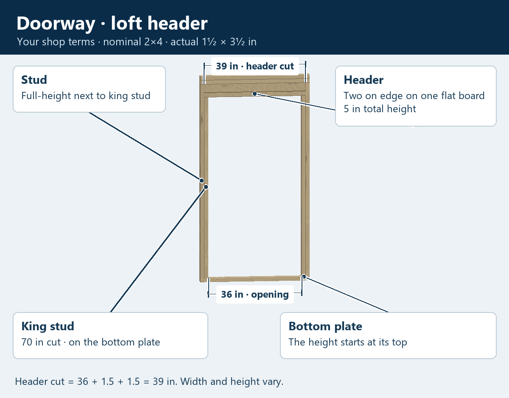
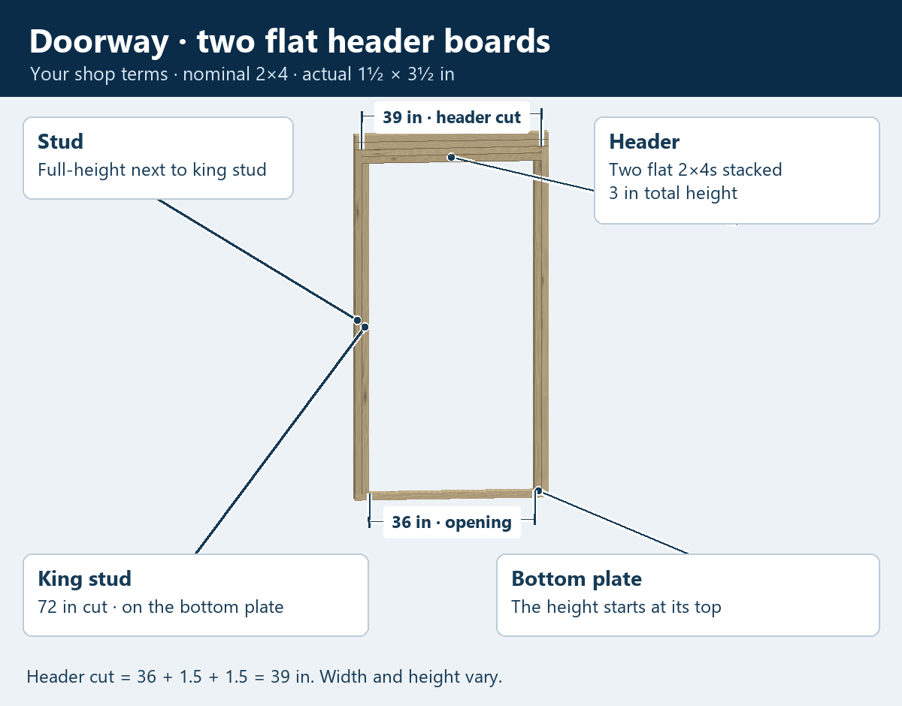
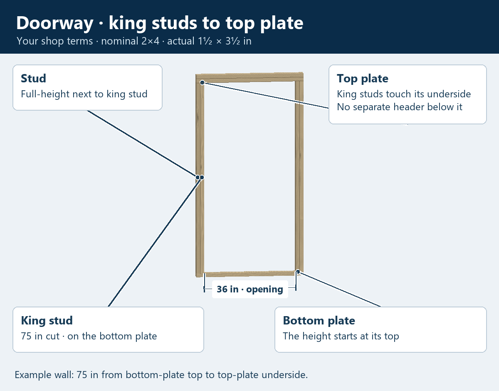

Learning the doorway framing
Stud, king stud and header
Your king stud is the shorter stud under the header, beside a full-height stud. Both stand on the bottom plate.
The header extends 1½ inches at each end to rest on the king studs. Its cut length is opening width + 3 inches.
The usual loft header

Two flat boards for a taller door

King studs up to the top plate

Rotate the doorway
Drag to turn. Pinch or use + / − to zoom. Tap any picture above to open it on your phone.
Loading the measured doorway…
King-stud cut: 70 inHeader cut: 39 inOpening top above flooring: 71½ in
Our terms and measurements
- Stud
- The full-height stud beside the king stud.
- King stud
- Your shop's name for the stud under the header. It sits on the bottom plate and is cut to the selected height. In the garage-door arrangement it reaches the top plate.
- Header
- The boards across the top of the doorway, extending 1½ inches over each king stud.
- Loft header
- The same assembly learned for the loft window: two touching 2×4s on edge on a flat 2×4, totaling 5 inches tall, with the ½-inch ledge outside.
These are the learned shop arrangements. The widths and cuts shown are examples. The bottom plate is shown during framing; its later doorway cut and any framing above a lower header are still to learn.